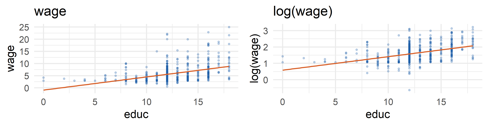

data("wage1")
coef(lm(log(wage) ~ educ, data = wage1))#> (Intercept) educ
#> 0.58377267 0.08274437Topic 3 · Nonlinearities, unbiasedness and the variance of OLS
Yıldız Technical University · Department of Economics
Fall 2026
By the end of this lecture you should be able to
Reading
Fall 2026 · Week 3
Wooldridge ch. 2.4–2.6 Heiss ch. 2 Stock & Watson ch. 4–5
Lab
Bivariate regression analysis in R. See Lab 04 on the course page.
Last week
OLS picks \hat\beta_0, \hat\beta_1 to minimize the SSR, and R^2 measures the fit.
Last week we estimated \widehat{wage} = -0.90 + 0.54\,educ: every extra year of education adds the same $0.54 per hour.
Think about a worker earning $3 per hour and one earning $20 per hour. Which description of the return to one more year of education sounds more realistic?
A) Both get the same raise in dollars, for example +$0.54
B) Both get the same raise in percent, for example +8%, so the higher earner gains more dollars
Wage gains are usually proportional: a year of education raises your wage by some percent. A constant percent effect means a nonlinear relationship in dollars. Today we see how logarithms let us estimate such effects with the same OLS machinery.
Logs and the four functional forms: what \beta_1 means in each, and when to take logs.
The model is “linear” if it is linear in the \beta’s. We are free to transform y and x:
\log(y) = \beta_0 + \beta_1 x + u, \qquad y = \beta_0 + \beta_1 \log(x) + u, \qquad y = \beta_0 + \beta_1 \tfrac{1}{x} + u
All of these can be estimated by OLS.
Linear in parameters (OLS works)
Not linear in parameters
\log(wage) = \beta_0 + \beta_1 educ + u y = \beta_0 + \beta_1 x^2 + u cons = \dfrac{1}{\beta_0 + \beta_1 inc} + u y = \beta_0 + \beta_1^2 x + u y = \beta_0 + e^{\beta_1 x} + u y^{1/4} = \beta_0 + \beta_1 \sqrt{x} + u
We always use the natural log, written \log(\cdot) or \ln(\cdot).
Rules
The key approximation. For small changes,
100\cdot\Delta\log(y) \approx \%\Delta y
Wage rises from 10 to 10.5 (+5%). Compute 100\,[\log(10.5)-\log(10)].
100\times 0.0488 = 4.88 \approx 5. The approximation works well for small changes and gets worse for large ones (Week 7).
\log(y) = \beta_0 + \beta_1 x + u \quad\Longrightarrow\quad \%\Delta y \approx (100\,\beta_1)\,\Delta x
Interpretation: a one-unit increase in x changes y by about 100\beta_1 percent. 100\beta_1 is called the semi-elasticity.
\widehat{\log(wage)} = 0.584 + 0.083\, educ, \qquad n = 526,\; R^2 = 0.186
Interpretation, and a common mistake
✓ One more year of education raises the wage by about 8.3%. This is the return to education.
✗ “One more year of education raises log(wage) by 8.3%” is wrong. Log(wage) rises by 0.083 units, and it is the wage that rises by 8.3%.
p1 <- ggplot(wage1, aes(educ, wage)) + geom_point(alpha = .3, color = "#1f5fa8") +
geom_smooth(method = "lm", se = FALSE, color = "#d9622b") + ggtitle("wage")
p2 <- ggplot(wage1, aes(educ, log(wage))) + geom_point(alpha = .3, color = "#1f5fa8") +
geom_smooth(method = "lm", se = FALSE, color = "#d9622b") + ggtitle("log(wage)")
gridExtra::grid.arrange(p1, p2, ncol = 2)
In levels, wages are skewed and spread out more at high education levels. After taking logs, the scatter is more symmetric and closer to a straight line.
y = \beta_0 + \beta_1 \log(x) + u \quad\Longrightarrow\quad \Delta y \approx \frac{\beta_1}{100}\,\%\Delta x
Interpretation: a 1% increase in x changes y by \beta_1/100 units of y.
\widehat{score} = 557.8 + 36.42\,\log(income)
n = 420 California school districts, R^2 = 0.56 (Stock & Watson)
\log(y) = \beta_0 + \beta_1 \log(x) + u \quad\Longrightarrow\quad \%\Delta y \approx \beta_1\,\%\Delta x
Interpretation: \beta_1 is the elasticity of y with respect to x.
#> (Intercept) log(sales)
#> 4.8219965 0.2566717\widehat{\log(salary)} = 4.822 + 0.257\,\log(sales), \qquad n = 209,\; R^2 = 0.211
A 1% increase in firm sales raises CEO salary by about 0.257%. Equivalently, sales must rise by about 4% to raise salary by 1%.
| Model | Dependent | Independent | Interpretation of \beta_1 |
|---|---|---|---|
| level-level | y | x | \Delta y = \beta_1\,\Delta x |
| log-level | \log(y) | x | \%\Delta y \approx (100\beta_1)\,\Delta x |
| level-log | y | \log(x) | \Delta y \approx (\beta_1/100)\,\%\Delta x |
| log-log | \log(y) | \log(x) | \%\Delta y \approx \beta_1\,\%\Delta x |
Memory aid
log on the left → talk in % of y. log on the right → talk in % of x.
level-level
log-level
level-log
log-log
+1 unit of x → y changes by \beta_1 units +1% in x → y changes by 0.01\beta_1 units +10% in x → y changes by 10\beta_1 % +10 units of x → y changes by 1000\beta_1 % \beta_1 is an elasticity 100\beta_1 is a semi-elasticity
Usually in logs
Usually in levels
Back to the explorer
With wage1 we can regress on \log(educ), but “1% more education” is not a natural question, two workers with educ = 0 must be dropped, and the fit is poor. Economics, not software, should choose the functional form.
We simulate data from a known model. Estimate different forms, check the residuals, then try 🕵 Mystery mode.
Estimates vary from sample to sample: the assumptions SLR.1–SLR.4 and unbiasedness.
Two questions about this distribution:
1 · Where is its center?
Is E(\hat\beta_1) = \beta_1? This is unbiasedness.
2 · How spread out is it?
How large is \text{Var}(\hat\beta_1)? This is precision or efficiency.
These are finite-sample properties: they hold for any sample size n.
SLR.1 · Linear in parameters
y = \beta_0 + \beta_1 x + u in the population.
SLR.2 · Random sampling
\{(x_i, y_i): i = 1,\dots,n\} is a random sample from that population.
SLR.3 · Sample variation in x
\sum_{i}(x_i - \bar x)^2 > 0: not all x_i are equal.
SLR.4 · Zero conditional mean
E(u\mid x) = 0, so E(u_i\mid x_i) = 0 for all i.
Theorem 2.1: unbiasedness of OLS
Under SLR.1–SLR.4, \;E(\hat\beta_0) = \beta_0\; and \;E(\hat\beta_1) = \beta_1.
Substitute y_i = \beta_0 + \beta_1 x_i + u_i into the formula for \hat\beta_1:
\hat\beta_1 = \frac{\sum_i (x_i-\bar x)\,y_i}{SST_x} = \beta_1 + \frac{\sum_i (x_i-\bar x)\,u_i}{SST_x}, \qquad SST_x = \sum_i (x_i-\bar x)^2
Take expectations conditional on the x’s. SLR.3 guarantees SST_x > 0, and by SLR.2 and SLR.4, E(u_i \mid x_1,\dots,x_n) = 0:
E(\hat\beta_1) = \beta_1 + \frac{\sum_i (x_i-\bar x)\,\color{#c0392b}{E(u_i\mid x)}}{SST_x} = \beta_1 + 0 = \beta_1
The weak link
Every step is algebra except E(u_i \mid x) = 0. If x and u are correlated, the second term does not vanish and \hat\beta_1 is biased.
We know the true model, draw many samples and estimate \beta_1 in each one:
Your estimate from one sample is \hat\beta_1 = 0.61. Under SLR.1–SLR.4, which statement is correct?
A) Since OLS is unbiased, \beta_1 = 0.61
B) The estimate 0.61 is unbiased
C) If we repeated the sampling many times, the estimates would average \beta_1, but 0.61 itself may be far from it
D) \hat\beta_1 is always within one standard error of \beta_1
Unbiasedness is a property of the procedure (the sampling distribution), not of one number. A single estimate can be far from the truth, and that is why we also need its variance.
Most serious threat: in non-experimental data SLR.4 often fails, and the relationship we find may be spurious.
How precise is \hat\beta_1? Homoskedasticity, sampling variance, standard errors and a first t test.
\text{Var}(u \mid x) = \sigma^2 \qquad\Longleftrightarrow\qquad \text{Var}(y \mid x) = \sigma^2
The unobservables have the same variance at every value of x. This assumption is not needed for unbiasedness; it simplifies the variance formulas.
Under SLR.1–SLR.5:
\text{Var}(\hat\beta_1) = \dfrac{\sigma^2}{SST_x}\; and \;\text{Var}(\hat\beta_0) = \dfrac{\sigma^2\, n^{-1}\sum_i x_i^2}{SST_x}, where SST_x = \sum_{i}(x_i-\bar x)^2.
Which of the following make \hat\beta_1 more precise (smaller variance)? Select all that apply.
A) A larger sample
B) A larger error variance \sigma^2
C) More variation in x across observations
D) Heteroskedastic errors
\text{Var}(\hat\beta_1) = \sigma^2 / SST_x. More observations and more spread in x raise SST_x. A larger \sigma^2 makes the estimate noisier. Under heteroskedasticity the formula itself is no longer valid.
\sigma^2 = E(u^2) is unknown, and the errors u_i are unobserved. We replace them with the residuals:
\hat u_i = u_i - (\hat\beta_0 - \beta_0) - (\hat\beta_1 - \beta_1)\,x_i
The unbiased estimator uses a degrees-of-freedom correction:
\hat\sigma^2 = \frac{1}{n-2}\sum_{i=1}^n \hat u_i^2 = \frac{SSR}{n-2}, \qquad E(\hat\sigma^2) = \sigma^2
Plug \hat\sigma into the standard deviation formula:
\text{se}(\hat\beta_1) = \frac{\hat\sigma}{\sqrt{SST_x}} = \frac{\hat\sigma}{\sqrt{\sum_i (x_i-\bar x)^2}}
The standard error summarizes how uncertain our estimate is.
From now on we also write estimated equations the way papers and textbooks do, with the standard error under each estimate, in parentheses:
\begin{aligned} \widehat{wage} &= - \underset{\small (0.685)}{0.905} + \underset{\small (0.0532)}{0.541}\,educ \\ & n = 526,\quad R^2 = 0.165 \end{aligned}
Estimate column of summary()).Std. Error column).Why bother
Everything you need for a test is visible at once: divide an estimate by the number underneath it and you have its t statistic.
Reading the estimate and its standard error off the equation above:
H_0: \beta_1 = 0 \quad\text{vs.}\quad H_1: \beta_1 \neq 0, \qquad t = \frac{\hat\beta_1 - 0}{\text{se}(\hat\beta_1)} = \frac{0.54136}{0.05325} = 10.17
Under H_0, t \sim t_{n-2}. Reject H_0 if |t| > c, where c \approx 1.96 at the 5% level in large samples.
If theory says y = 0 when x = 0 (e.g., tax revenue and income), drop the intercept: \;\tilde y = \tilde\beta_1 x,\;\; \tilde\beta_1 = \sum_i x_i y_i \big/ \sum_i x_i^2
#> full.roe origin.roe const.(Intercept)
#> 18.50119 63.53796 1281.11962Use with care
If the true intercept is not zero, the through-the-origin slope is biased. Its R^2 can even be negative, so R reports a different R^2 for such models.
Next topic
Multiple regression I: holding other factors fixed explicitly; the Gauss–Markov theorem.
Wooldridge ch. 3 Heiss ch. 3
Econometrics I · Yıldız Technical University